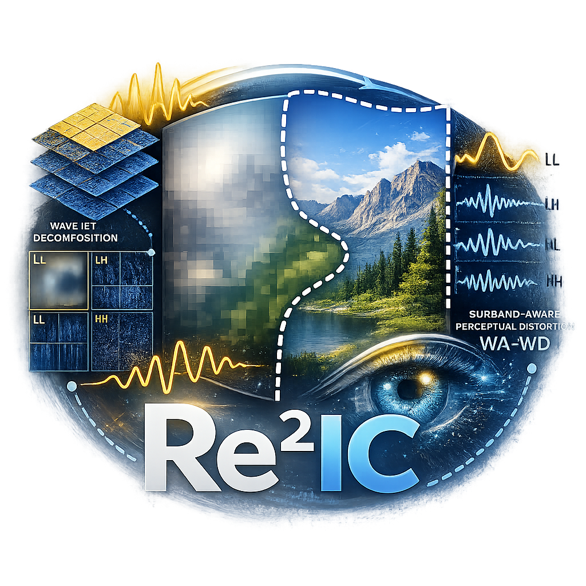
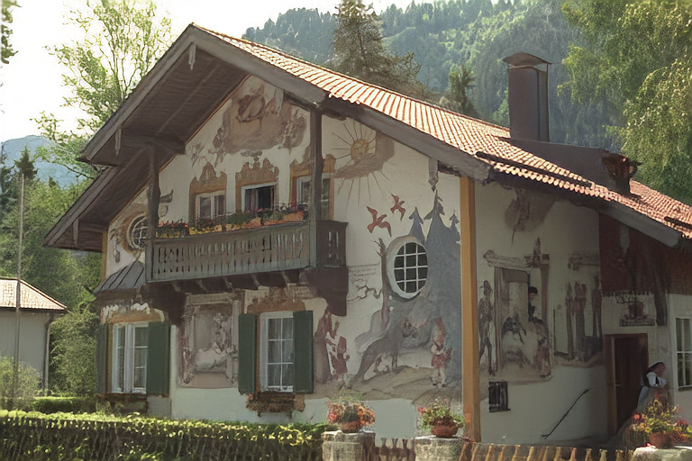
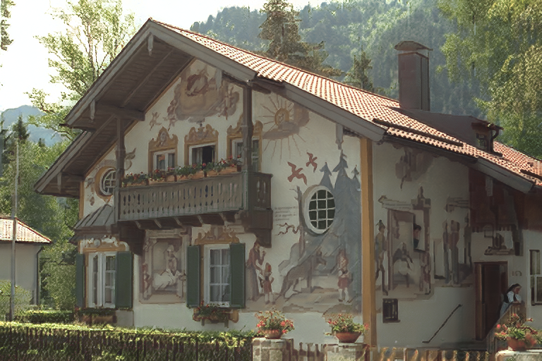
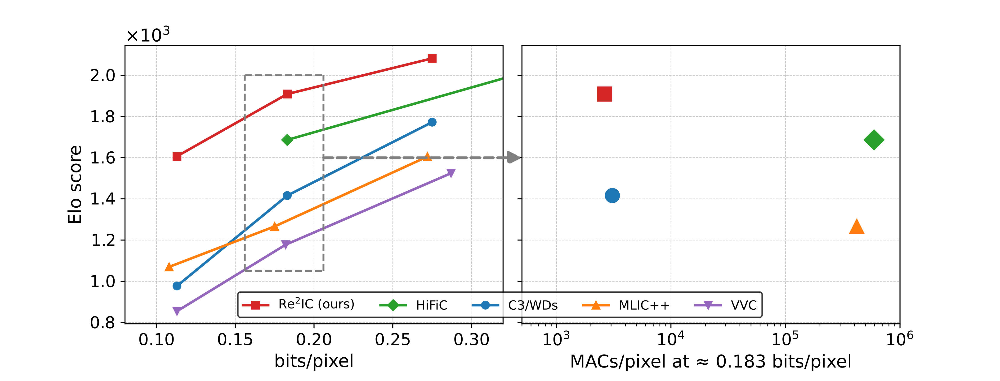
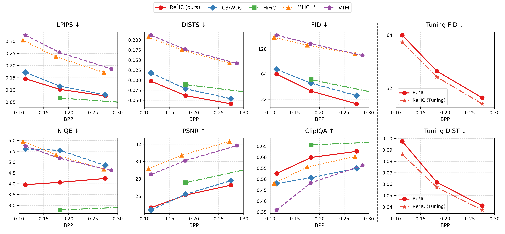
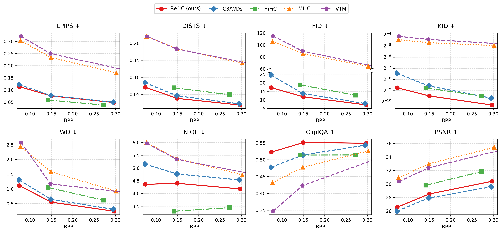
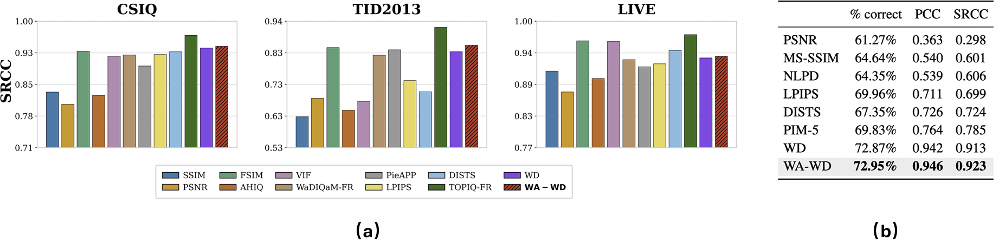

Illustration of WA-WD

Fig. 3: Paired images are processed by a VGG backbone and DWT, decomposing features into orthogonal subbands for multi-scale WA-WD estimation.

We propose a frequency-aware perceptual optimization framework for low-complexity image compression, realized as a Realism-enhanced Region-based Implicit Codec (Re2IC). Re2IC models visual perception via saliency-guided region partitioning and local–global perceptual modulation. To enhance realism under complexity constraints, we introduce wavelet–Wasserstein distortion (WA-WD), a frequency-decomposed perceptual distortion that balances fidelity and realism through subband-aware modeling and provides a more reliable approximation than standard Wasserstein distortion. Together, these designs enable fine-grained spatial–spectral optimization, allowing Re2IC to achieve superior rate–perception trade-offs, outperforming generative codecs such as HiFiC while using less than 1% of their decoding cost. Extensive experiments demonstrate state-of-the-art perceptual performance among overfitted codecs. Beyond compression, WA-WD serves as a standalone, tunable perceptual metric with strong alignment to human preference (Pearson 94.6%, Spearman 92.3%) and competitive performance across multiple IQA benchmarks.



Fig. 1: Interactive comparison between ReReIC and HiFiC.
Fig. 2: Visual perceptual comparison between WA-WD and C3-WDs at similar bitrates.
Fig. 3: Paired images are processed by a VGG backbone and DWT, decomposing features into orthogonal subbands for multi-scale WA-WD estimation.

Fig. 4: Left: Evaluation of different methods vs. bit rate. Right: Decoding complexity at the middle bit-rate regime.

Fig. 5: Rate-distortion and -perception curves on Kodak

Fig. 6: Rate-distortion and -perception curves on CLIC2020

Fig. 7: Evaluation of WA-WD: (a) performance across IQA datasets; (b) human-rating prediction.
@article{ReReIC,
title={Frequency-Aware Perceptual Optimization for Low-Complexity Implicit Image Compression},
author={Haotian Wu, Gen Li, Di You, Pier Luigi Dragotti and Deniz Gündüz},
journal={Proceedings of the 43rd International Conference on Machine Learning, Seoul, South Korea},
year={2026}
}